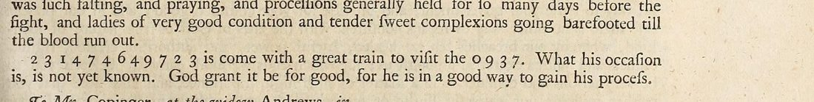

At a glanceNot solved · text not obtained
- The letter
- An unsigned newsletter, Brussels, 12 August 1656, “To Mr. Copinger, at the widow Andrews, in Bedford-bury in Covent-garden”. Intercepted by Thurloe’s office.
- Where
- The original is in the Bodleian, MS Rawlinson A vol. xli p. 78, not digitised. Printed by Thomas Birch, Thurloe State Papers (1742), vol. 5 p. 267.
- The cipher
- Single digits: a name of twelve (2 3 1 4 7 4 6 4 9 7 2 3) and a word of four (0 9 3 7), eight distinct digits in all.
- How it was tried
- The name’s pattern was tested against cribs, and every royalist and Commonwealth key of 1653–60 on Cryptiana was applied. Nothing fits.
- Still open
- The name and the word.
01 The letter
The newsletter reports the Spanish siege of Valenciennes, the Swedish war in Poland and the Muscovites, and the fasting and processions that preceded the fighting. Then one sentence in figures: “2 3 1 4 7 4 6 4 9 7 2 3 is come with a great train to visit the 0 9 3 7. What his occasion is, is not yet known. God grant it be for good, for he is in a good way to gain his process.” Brussels in August 1656 suggests the arrival of Don Juan José of Austria as governor, or a visit to Charles II’s court at Bruges.

This letter was one of four short pieces with no known decipherment in Birch’s volumes that Cryptiana lists together. They share only the printed source and each is in its own cipher: Beverning and Vande Perre to Boreel, 1653, du Gard to White, 10 June 1656 and Waddall to “Vanyeare”, 22 August 1656 each have their own page.
02 What was tried
The name has the pattern ABCDEDFDGEAB and the word HGBE, sharing 9, 3 and 7 with it. If the word were “king” (“to visit the king”), its letters would force the name to read ?n?dgdfdig?n, which is impossible; so either the digits are not one letter each or the word is not “king”. Every royalist and Commonwealth key of 1653–60 that Cryptiana publishes was applied as well; none gives a name. Sixteen digits allow nothing further.
03 What remains
- The name and the word (16 digits): not read. Blocker: too short. No key online; the ciphers of the royalist agents of 1656 would be in the Clarendon manuscripts, which are not online.
04 Sources
- Bodleian Library, MS Rawlinson A vol. xli p. 78.
- T. Birch (ed.), A Collection of the State Papers of John Thurloe (London 1742), vol. 5 p. 267: British History Online; page image in the Internet Archive scan.
- S. Tomokiyo, Cryptiana, Thurloe (the keys tried).
Ciphertext and notes: targets/copinger1656/; the key-trial script is in targets/thurloe/.